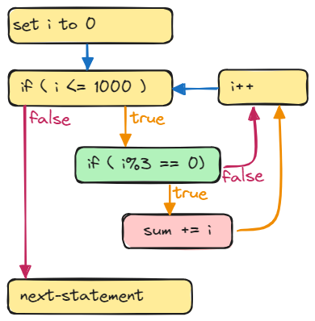
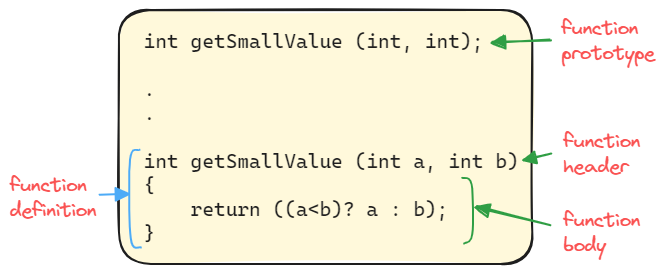

Lecture 0: Review - Part 2
Compound Statement
- A compound statement (also known as a block) is a collection of multiple statements enclosed within curly braces
{}, executed together as if they were a single statement. - They can be used in any context where a single statement is allowed.
- It typically appears as the body of another statement, such as:
ifstatement orforstatement. - The following example shows two compound statements, which are highlighted:
#include <iostream>
int main()
{
int a = 10; // definition statement
{ // this is a compound statement
int b = 6;
std::cout << "a+b = " << a+b << '\n';
}
a = a + 1; // assignment statement
{ // this is another compound statement
int b = 4;
std::cout << "a+b = " << a+b << '\n';
}
return 0; // return statement
}
- In the above exmple, the
mainfunction has FIVE statements: definition statement, compound statement, assignment statement, compound statement, and return statement. - Notice that the variable
bis only visible within its block.
Branching
- A branch is a statement in a program that can cause a CPU to begin executing a different statement sequence and thus deviate from its default behavior of executing statements in order (i.e., sequentially).
- Branching transfers the control to execute a statement that is not the next statement. Usually, we describe this transfer as jump.
Types of branching in C++
Conditional branching
ifstatementif elsestatementswitchstatementwhilestatementdo whilestatementforstatement
Unconditional branching
breakstatementcontinuestatementgotostatement
Examples
What will the following program display?
#include <iostream>
using namespace std;
int main ()
{
int a = 0, b = 2, x = 4, y = 0;
cout << ((a == b) || (a == y)) << endl;
cout << (2*b != x) << endl;
cout << ((b <= x) && (b > a)) << endl;
cout << (y > a) << endl;
return 0;
}
Output
1
0
1
0
What is the semantics of the following code?
{kind=link}
First, increase the balance by two thousands only if the value of sales is larger than ten thousands. Second, print the value of balance. The semantics is illustrated in the shown figure.
The arrows represent "transfer of control". When the control at if statement, it evaluates the boolean expression. If the boolean expression is true, the control will transfer to execute balance+=2000; and then cout << balance. If the boolean expression is false, the control will transfer to cout << balance.
Tip
You should be familiar with the transfer of control for each branching statement.
What is the semantics of the following code?
{kind=link}
This code will print out "Hello!" five times. The semantics of while loop is illustrated in the shown figure.
Did you see a loop? while, do-while and for are known as loop statements.
Express the following logic using C++
Print the message “The number is valid” if the variable speed is within the range 0 through 200.
The C++ code is:
Express the following logic using C++
Assign 0.10 to commissionRate unless sales is greater than or equal to 50000.00, in which case it assigns 0.20 to commissionRate
The code is:
or
Express the following logic using C++
We need the sum of all numbers between 0 and 1000 that are divisible by 3.
The C++ code is:
Another acceptable answer:
Notice the following:
-
In the second solution, the
forloop has ONE inner statement to repeat, which isifstatement, andifstatement has also ONE inner statement, which issum += i;.  -
We can write the inner statements as compound statements:
But these braces are redundant, since all compound statements consist of only ONE statement.
-
The semantics of this
forloop is illustrated in the shown figure.
{kind=link}
Express the following logic using C++
Suppose x and y are variables of type int that have been given values. Write an if-else statement that increases the value of x by 10 if x is greater than y. Otherwise, it sets the value of y to zero and decreases the value of x by 1.
The C++ code is:
Express the following logic using C++
Suppose you are writing a database system where you store the result of a transaction in a variable named result of type int. Write a switch statement that outputs the status of the transaction. It should output the message "transaction is completed" if the result is equal to one. The transaction is still processing if the result is zero. However, if the result is -1, it means the transaction has failed.
The C++ code is
Write a code
Suppose a, b and c are variables of type int that have been given values. Write a code to display the smallest value.
The code is:
cout << "The smallest is ";
if (a < b && a < c)
cout << a;
else if (b < c)
cout << b;
else
cout << c;
cout << endl;
Another (not recommended but acceptable) solution:
cout << "The smallest is ";
if (a < b)
if (a < c)
cout << a;
else
cout << c;
else
if (b < c)
cout << b;
else
cout << c;
cout << endl;
Another solution:
Write a Program
Write a C++ program that reads two floats (e.g., a and b) and displays the solution of the equation \(ax + b = 0\), if any.
The logical thinking of this problem is as follows:
- INPUT: two numbers
a&b. - PROCESS: compute the value of
x, where \(x = -b/a\). We need to be careful whenais zero. - OUTPUT: the value of
x.
#include <iostream>
using namespace std;
int main()
{
float a, b;
cout << "This program solves the equation ax + b = 0" << endl;
cout << "-------------------------------------------\n\n";
cout << "Enter the value of a: "; cin >> a;
cout << "Enter the value of b: "; cin >> b;
if (a == 0)
cout << "No equation!\n";
else {
float x = -b/a;
cout << "The solution is x = " << fixed << x << endl;
}
return 0;
}
Write a Program
Write a program that reads two integers and displays the sum of the integers between them. For example, if the user enters \(5\) and \(9\), the program would display \(21\) because \(6+7+8=21\). The program should check which one of the two numbers is the greater and act accordingly.
The logical thinking of this program:
- INPUT: two integer numbers
aandb - PROCESS:
- If
bis less thana, then swap the values; so thatais less than or equal tob - Define a variable
sumand initialize it to0. - Start a for loop from a+1 up to b-1
- In each iteration, add the value of loop index to sum
- If
- OUTPUT: the value of sum.
#include <iostream>
using namespace std;
int main()
{
int a, b; // the two numbers
cout << "Enter two numbers: ";
cin >> a >> b;
// make sure that a is less than or equal to b
if (b < a) {
// do swapping
int temp = b;
b = a;
a = temp;
}
int sum = 0;
for (int i=a+1; i<b; i++) // or i <= b-1
sum += i;
cout << "Sum = " << sum << endl;
return 0;
}
Write a Program
In mathematics, a number \(n\) is said to be perfect if it equals to the sum of its proper divisors, deficient if the sum of its proper divisors is less than \(n\), and abundant if this sum exceeds \(n\).
For example, \(6\) is a perfect number since its proper divisors are \(1\), \(2\) and \(3\), and their sum is \(6\). \(12\) is abundant becuase the sum of its proper divisors is \(1+2+3+4+6 = 16\).
Write a program that reads a positive number and determines whether the number is perfect, deficient or abundant.
#include <iostream>
using namespace std;
int main()
{
int n; // the number variable
cout << "Enter a number n: ";
cin >> n;
// check if n is negative
if (n<0) {
cout << "Enter a positive number" << endl;
return 0;
}
int sum = 0; // to store the sum of divisors
// we iterate from 1 up to n/2
// or we iterate from n/2 down to 1
for (int d=n/2; d>=1; d--)
if (n % d == 0) // if d is a divisor
sum += d; // add d to sum
// output the result
if (sum == n) // perfect
cout << n << " is a perfect number." << endl;
else if (sum < n) // deficient
cout << n << " is a deficient number." << endl;
else // abundant
cout << n << " is an abundant number." << endl;
return 0;
}
Exercise
Exercise
You have four identical prizes to give away and a pool of 25 finalists. The finalists are assigned numbers from 1 to 25. Write a program to randomly select the numbers of 4 finalists to receive a prize. Make sure not to pick the same number twice. For example, picking finalists 3, 15, 22, and 14 would be valid but picking 3, 3, 31, and 17 would be invalid, because finalist number 3 is listed twice and 31 is not a valid finalist number
Functions
Basic Concepts
- Recall that there are two kinds of functions in C++: functions that return (produce) a value and functions that do not return a value. Functions that do not return a value are called void functions.
- For a function that returns a value, a function call is an expression consisting of the function name followed by arguments enclosed in parentheses. If there is more than one argument, the arguments are separated by commas.
- For a void function, a function call (function invocation) is a statement consisting of the function name followed by arguments enclosed in parentheses and then terminated with a semicolon.
- Similar to variable declaration and variable definition, we also have function declaration and function definition. 
- A function declaration (or function prototype) consists of, in order:
- the type of the value returned by the function; if the function has no return value, the type shall be
void, - the name of the function,
- a list of formal parameters (or simply parameters), and
- a semicolon (
;).
- the type of the value returned by the function; if the function has no return value, the type shall be
- A function definition consists of a function header followed by a function body. The function header is written similar to the function declaration, except that the header does not have a semicolon at the end. The value returned is determined by the statements in the function body.
- In function prototype, it is not necessary to list the name of the parameter inside the parentheses. Only its data type is required. The compiler ignores the name of the parameter variable in the function prototype.
{kind=link}
Example: The smallest number
The following program takes three integer numbers as input from a user, and prints the smallest.
#include <iostream>
// function prototype
int getSmallValue (int, int);
int main()
{
int n1, n2, n3; // three integer numbers
std::cout << "Enter three numbers: ";
std::cin >> n1 >> n2 >> n3;
int smallest = getSmallValue(n1, n2); // invoke getSmallValue()
smallest = getSmallValue(smallest, n3);
std::cout << "The smallest value is " << smallest << std::endl;
return 0;
}
// function definition
int getSmallValue(int a, int b)
{
return ((a<b)? a : b);
}
In the previous example, we can actually print out the minimum value without defining a new variable. So, the following code:
int smallest = getSmallValue(n1, n2); // invoke getSmallValue()
smallest = getSmallValue(smallest, n3);
std::cout << "The smallest value is " << smallest << std::endl;
Example: Perfect, deficient or abundant
The following program reads a positive number and determines whether the number is perfect, deficient or abundant.
#include <iostream>
// function prototype
int sumOfProperFactors(int number);
int main()
{
int num;
std::cout << "Enter a positive number: ";
std::cin >> num;
if (int sum = sumOfProperFactors(num); sum == num)
std::cout << num << " is a perfect number\n";
else if (sum > num)
std::cout << num << " is a abundant number\n";
else
std::cout << num << " is a deficient number\n";
return 0;
}
// function definition
int sumOfProperFactors(int n)
{
int sum = 1;
for (int d=n/2; d>1; d--)
if (n % d == 0)
sum += d;
return sum;
}
Rolling a Pair of Dice
In this example, we write a function that rolls a pair of dice until the sum of the numbers rolled is a specific number. We also want to know the number of times the dice are rolled to get the desired sum.
The smallest number on each die is 1, and the largest number is 6. So the smallest sum of the numbers rolled is 2, and the largest sum of the numbers rolled is 12. Suppose that we have the following declarations:
We use the random number generator rand() to randomly generate a number between 1 and 6. Then, the following statement randomly generates a number between 1 and 6 and stores that number into die1, which becomes the number rolled by die1
Similarly, the following statement randomly generates a number between 1 and 6 and stores that number into die2, which becomes the number rolled by die2.
The sum of the numbers rolled by two dice is:
We can now write the functionrollDice() that takes as a parameter the desired sum of the numbers to be rolled and returns the number of times the dice are rolled to roll the desired sum.
Self-Check
-
What is the semantics of the following line?
-
The following program has some syntax errors. Find these errors and then correct them?
-
Write a function declaration and a function definition for a function that takes one argument of type double. The function returns the character value ’P’ if its argument is positive and returns ’N’ if its argument is zero or negative.
-
Write a function definition for a function called
inOrderthat takes three arguments of typeint. The function returnstrueif the three arguments are in ascending order; otherwise, it returnsfalse. For exmaple, inOrder (1 , 2 , 3) and inOrder (1 , 2 , 2) both return true, whereas inOrder (1 , 3 , 2) returns false.
-
This is a function prototype, for which it declares
flagas a function that accepts one parameter of type double and returns a boolean value. -
There are two syntax errors:
a. The function header ends with semicolor.
b. In
main()function, the identifiersumis not declared.There are two solutions. The first solution is:
#include <iostream> int sum (int a, int b); int main() { std::cout << "Sum = " << sum(3, 5) << std::endl; return 0; } int sum (int a, int b) { return a+b; }The second solution is:
-
// function declaration char checkNumber (double); // function definition char checkNumber (double v) { if (v>0) return 'P'; else return 'N'; }Another function definition:
-
Another solution:
Formal Parameters & Arguments
- When a function is invoked, the formal parameters are initialized from the arguments, and the statements in the function body are executed.
- The initialization operation depends on the type of the formal parameters. There are two basic types: call-by-value parameters and call-by-reference parameters.
- Consider the following program:
Sum of Two Numbers - When the program executes line 9, the control transfers to line 16 and the paramters are initialized as follows:
Therefore, variable
cwill be created and initialized with the value of'a', and the variablesvalueandawill refer to the same object. The variableais invisible (out of its scope). However, its object is accessible by the variablevalue. - After initialization, the control transfers to line 18 and the following message will be displayed:
Then, the control transfers to line 19. At this moment, the program is waiting for the user to enter a value. Once the user enters a value, the value will be stored into the object named by
value. Remember, that object has two references: the variablevalueand the variablea. - After executing line 19, the object referenced by
cis destroyed, the variablevalueis removed and the control transfers back to line 9. - Then the control transfers to line 10 and the function
inputwill be invoked again. The control transfers to line 16 again. This time, the paramters are initialized as follows: - Then, lines 18 and 19 are executed accordingly.
-
Here is a sample output of the program:
Program ouput with input shown in bold
Enter the value of a: 13
Enter the value of b: 34
The sum = 47
Exercise
Exercise
{kind=link}
Write a program that lets the user play the game of Rock, Paper, Scissors against the computer. The program should work as follows:
- When the program begins, a random number in the range of 1 through 3 is generated. If the number is 1, then the computer has chosen rock. If the number is 2, then the computer has chosen paper. If the number is 3, then the computer has chosen scissors. (Don’t display the computer’s choice yet.)
- The user enters his or her choice of “rock”, “paper”, or “scissors” at the keyboard. (You can use a menu if you prefer.)
- The computer’s choice is displayed.
- A winner is selected according to the following rules:
- If one player chooses rock and the other player chooses scissors, then rock wins. (The rock smashes the scissors.)
- If one player chooses scissors and the other player chooses paper, then scissors wins. (Scissors cuts paper.)
- If one player chooses paper and the other player chooses rock, then paper wins. (Paper wraps rock.)
- If both players make the same choice, the game must be played again to determine the winner.
Be sure to divide the program into functions that perform each major task.
If you are not familiar with this game, watch this Youtube video